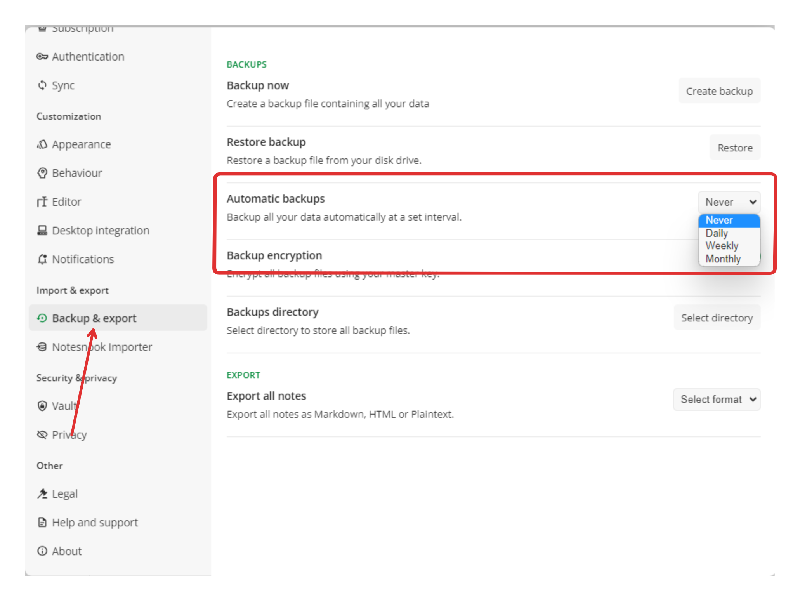
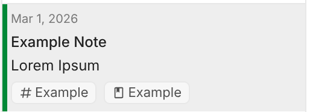

Notesnook 的零知识架构：为什么它敢让服务器只当"密文仓库"
从 Sync Server 到 Importer，拆解 Notesnook 如何用端到端加密重构笔记应用的信任边界，以及这套设计的代价与适用场景。
我一直在想一个问题：笔记应用的"安全"到底意味着什么？是密码锁了启动界面？还是传输过程加了 TLS？这些都算，但 Notesnook 做了一件更激进的事——它把服务器变成了一个纯粹的"密文仓库"，连主密钥的影子都碰不到。
这件事说起来简单，做起来却牵涉到架构层面的每一个选择。Sync Server 为什么只暴露存储接口？Importer 为什么坚持本地处理不上传明文？Notebook 和 Tag 为什么设计成两个独立体系而不是一棵大树？我试着从样本文档里挖一挖这些设计背后的取舍。
核心原理：让服务器变成哑巴仓库
去 Notesnook 官网 了解一下就能发现，它的加密模型有一个关键约束——服务器不接触你的主密钥。用户在客户端用主密钥派生加密密钥，笔记内容、附件、元数据全部在本地加密后才上传到 Sync Server。服务器拿到的就是一堆看不懂的密文块，能做的只有存储和转发，连"这篇笔记叫什么标题"都不知道。
这和大多数云笔记的思路完全不同。Evernote、Notion 这类应用的服务器是能看到明文的——它们需要解析内容来做搜索、推荐、协作。Notesnook 放弃了这些能力，换来了一个承诺：哪怕服务器被攻破、运营方被传票，你的笔记内容也不会泄露。
这种设计直接体现在自托管 Sync Server 的实现上。官方源码托管在 GitHub，提供 Docker 镜像一键部署。客户端配置里把同步端点换成自建地址就能跑，所有 Notesnook 客户端（桌面、Web、移动）都支持自定义端点。注意这里的细节：自托管并没有让服务器变得更"聪明"——它仍然只存储密文，不解读数据。你换来的只是存储位置的控制权，从 streetwriters 的基础设施换到了你自己的服务器、家庭 NAS 或者任意 VPS。

Importer 的取舍：安全优先还是便利优先
先 下载 装好客户端，从 Evernote、Google Keep、Obsidian、Joplin 迁移过来的用户会注意到一个细节：Notesnook Importer 的所有处理都在本地完成，不上传明文。你选文件、选导入格式、等进度条走完，全程数据只在你的设备上流转。
这意味着什么？意味着 Importer 不能依赖服务端的格式转换能力，所有解析逻辑都要塞进客户端。v3.4.0 更新 Evernote 导入器时修复了一批链接误识别、图片尺寸元数据缺失的问题——这些 bug 的修复必须等客户端发版，没法像 SaaS 产品那样热修。但反过来想，Importer 不上传明文这件事本身就是一份信任声明：我们连你的旧数据都不想看。
这种取舍在迁移体验上也有体现。Simplenote 的协作评论会被直接跳过——不是技术上做不到，而是多人协作需要服务端参与，和零知识模型有本质冲突。你要安全还是要协作？Notesnook 选了前者，把不兼容的功能大方地砍掉了。
组织体系的双层设计
Notebook 和 Tag 是两个独立体系这件事，我觉得是 Notesnook 组织逻辑里最有意思的选择。
Notebook 负责纵向层级（项目 > 子任务），Tag 负责横向标记（待办、重要、产品 A）。两者互不干扰：Tag 不影响 Notebook 归属，Notebook 也不影响 Tag 筛选。搜索可以结合两者做精确过滤——关键词 + 某个 Tag + 某个 Notebook，三条交集锁定结果。
为什么不用一棵树解决？因为树结构在交叉检索时很尴尬。你有一个"读书笔记"Notebook，每篇笔记想同时按"作者""风格""是否已读"三个维度筛，树形结构就得复制出"读书笔记/村上春树/短篇"、"读书笔记/村上春树/长篇"、"读书笔记/莫言/……"这样的嵌套，很快失控。Tag 作为横向维度加进来，相当于在树上面拉了一张网，交叉筛选变得自然。
更妙的是配额设计：Notebook 有 50 / 500 / 无限的阶梯定价，Tag 从免费版开始就完全开放、数量不限、每条笔记可挂任意数量。这背后的产品逻辑是：限制结构化组织的规模，但不限制内容的多维标记——前者服务于付费转化，后者是基本体验保障。
这套设计的代价
零知识架构不是银弹，Notesnook 为它付出了几个看得见的代价。
第一，搜索能力受限。服务端搜不了密文，搜索只能在客户端索引本地明文缓存。大笔记库的首次索引、跨设备搜索同步都会比传统云笔记慢一些。v3.2 重写的搜索引擎引入 token-by-token 高亮，但核心限制没解除——索引必须在本地完成。
第二，自托管需要 Pro 计划权限。免费和 Essential 用户可以本地跑 Sync Server 做实验，但客户端不会允许自定义同步端点指向非官方地址。这是功能开关，也是商业模式的一部分——想完全掌控数据流向，得先为这份自由付费。
第三，没有多人协作。Simplenote 迁移过来的协作评论被跳过不是偶然，而是架构注定的结果。零知识加密下服务器看不到明文，就没法做实时协作的版本合并、冲突解决。这对个人用户不是问题，但对团队场景是硬伤。
还有运维成本。自托管 Sync Server 没有官方运维支持——服务器安全、定期更新、数据备份、故障排查全得自己来。notesnook文档 里推荐至少做定期的加密备份加服务器快照备份，这条建议本身就在暗示：你选了自托管，就得接住运维的重量。
适合谁
Notesnook 的核心用户画像其实很清晰：注重隐私安全的个人用户，有技术能力或意愿学习自托管的人，已经在加密通信、密码管理器这类工具上有使用习惯的人。
如果你对"服务器能不能看到我的数据"这个问题毫不在意，只是想找一个好用的笔记应用，Notesnook 的加密反而是累赘——启动时解锁主密钥、每次同步等加密解密走完，这些操作在体验上是摩擦。但如果你曾经因为某个云服务的隐私事件皱过眉，或者你存的东西本身就不想让任何第三方看到，Notesnook 这套设计就是一种难得的诚意。

我自己的判断是：Notesnook 代表了一条笔记应用的分支路线——不是"更智能"，而是"更可信"。它没有追求 Notion 那种全能化，也没有走 Obsidian 的本地优先加社区插件路线，而是把"零知识加密"这件事做到架构里的每一层，让服务器老老实实当哑巴仓库。这条路注定不会成为主流，但对在意它的人来说，这份取舍比任何功能列表都有说服力。
如果你想看看它的实际运行效果，可以去官方渠道下载体验。整套资料在 GitHub、Gitee、GitCode 三个仓库都能拿到，方便不同网络环境的用户查阅。